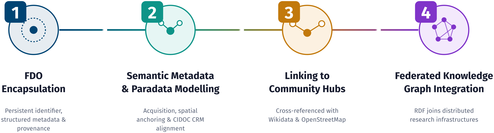
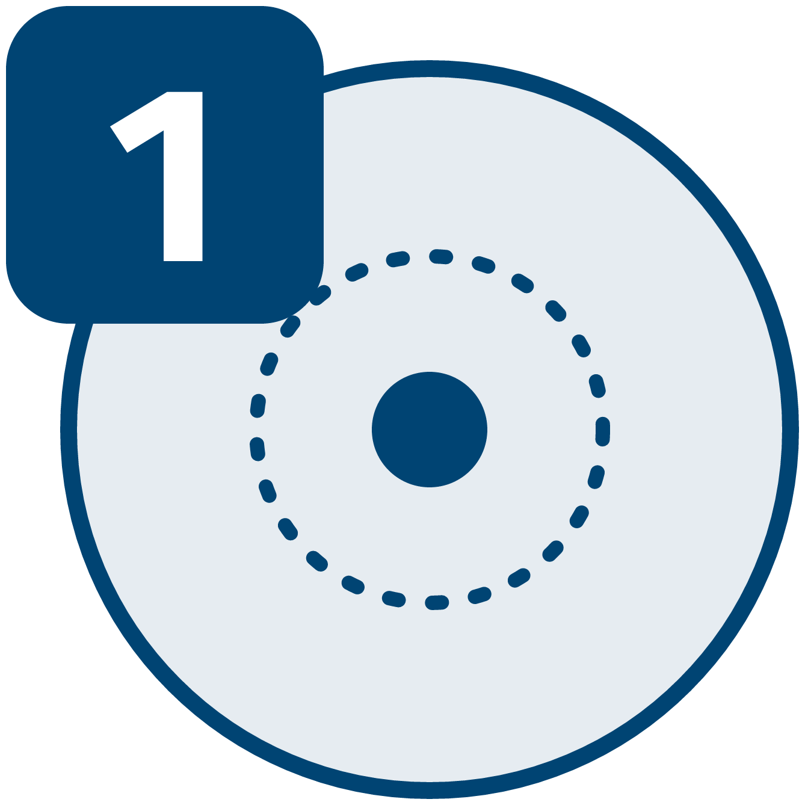
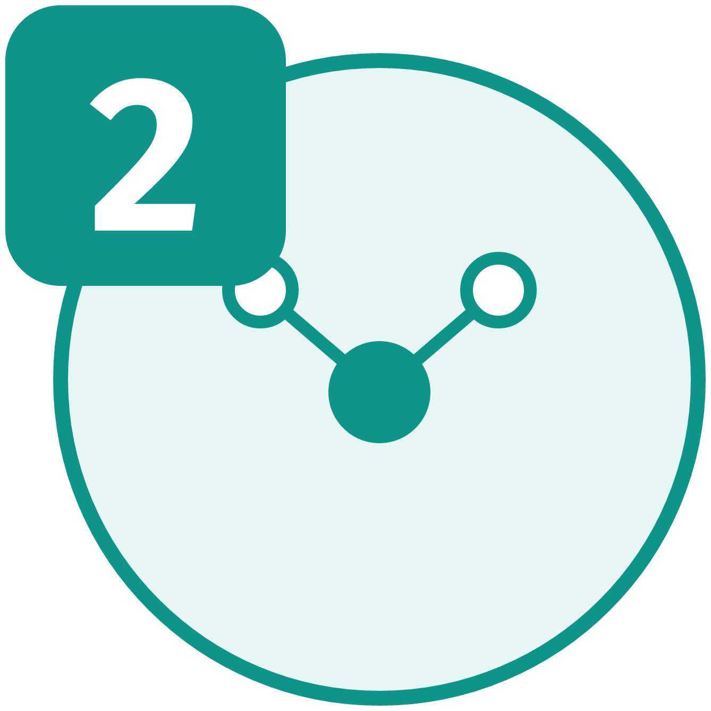
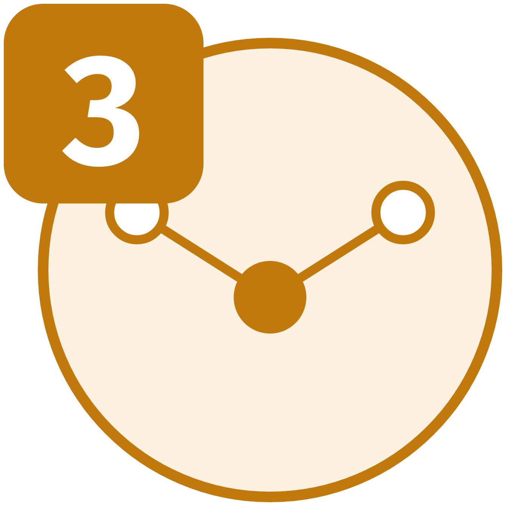
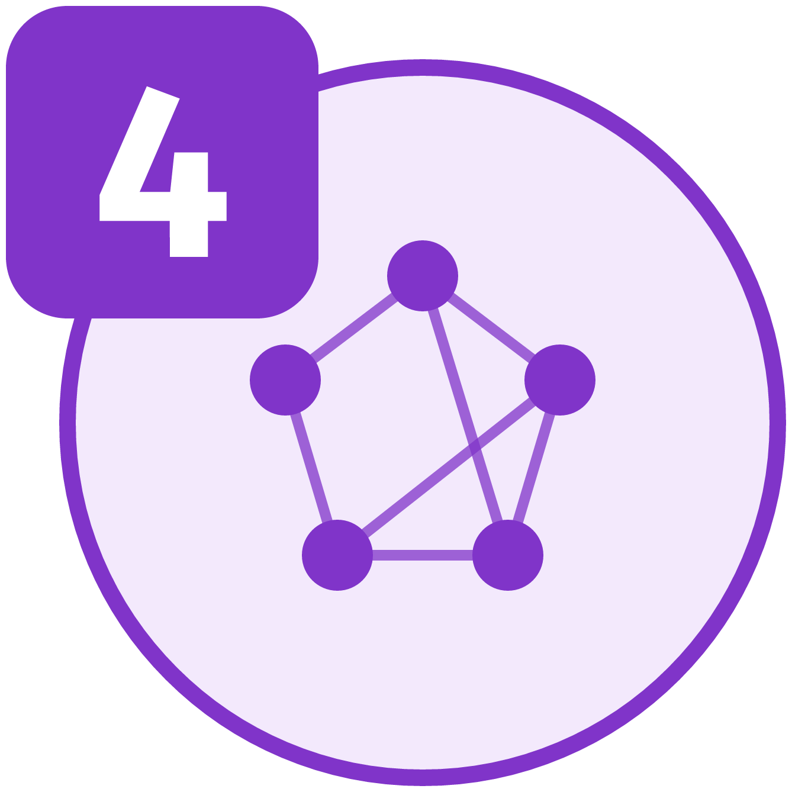
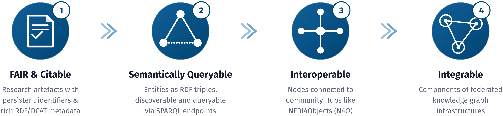
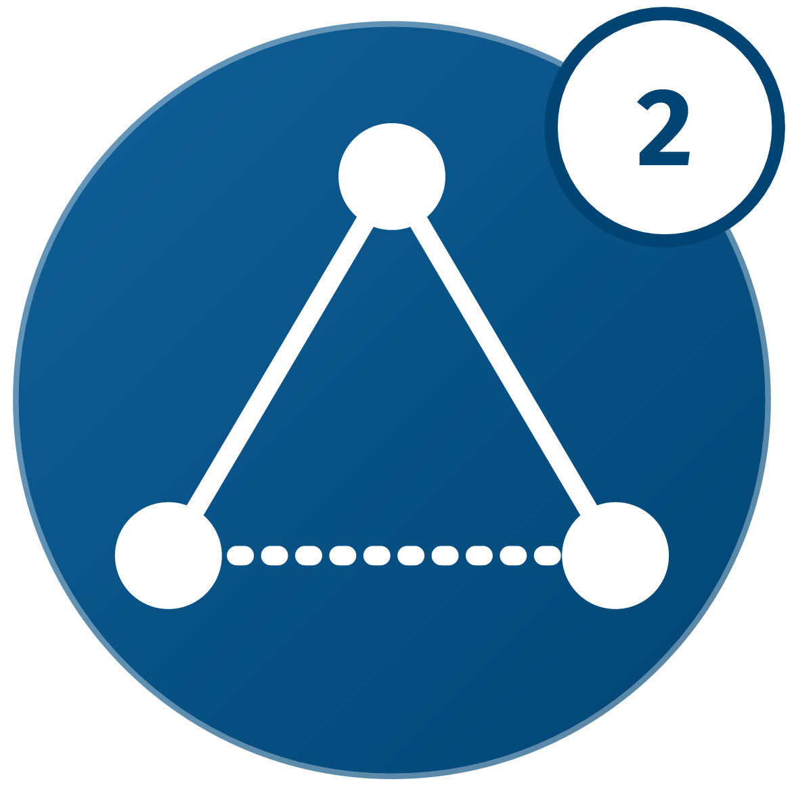
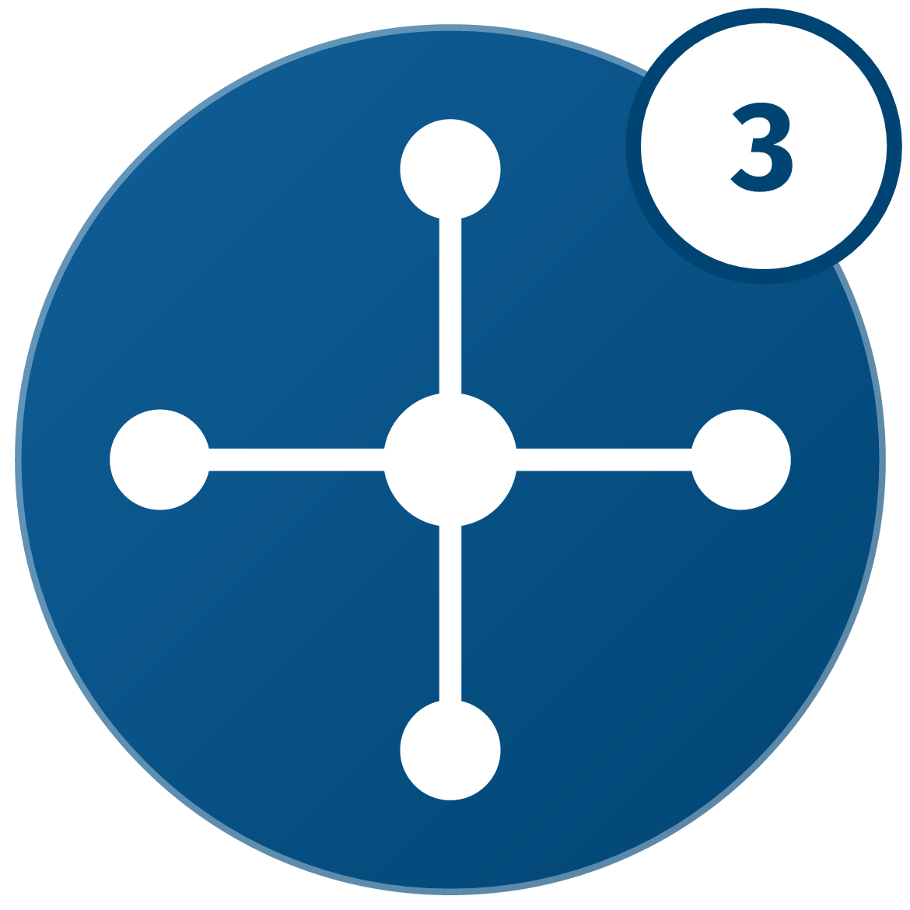
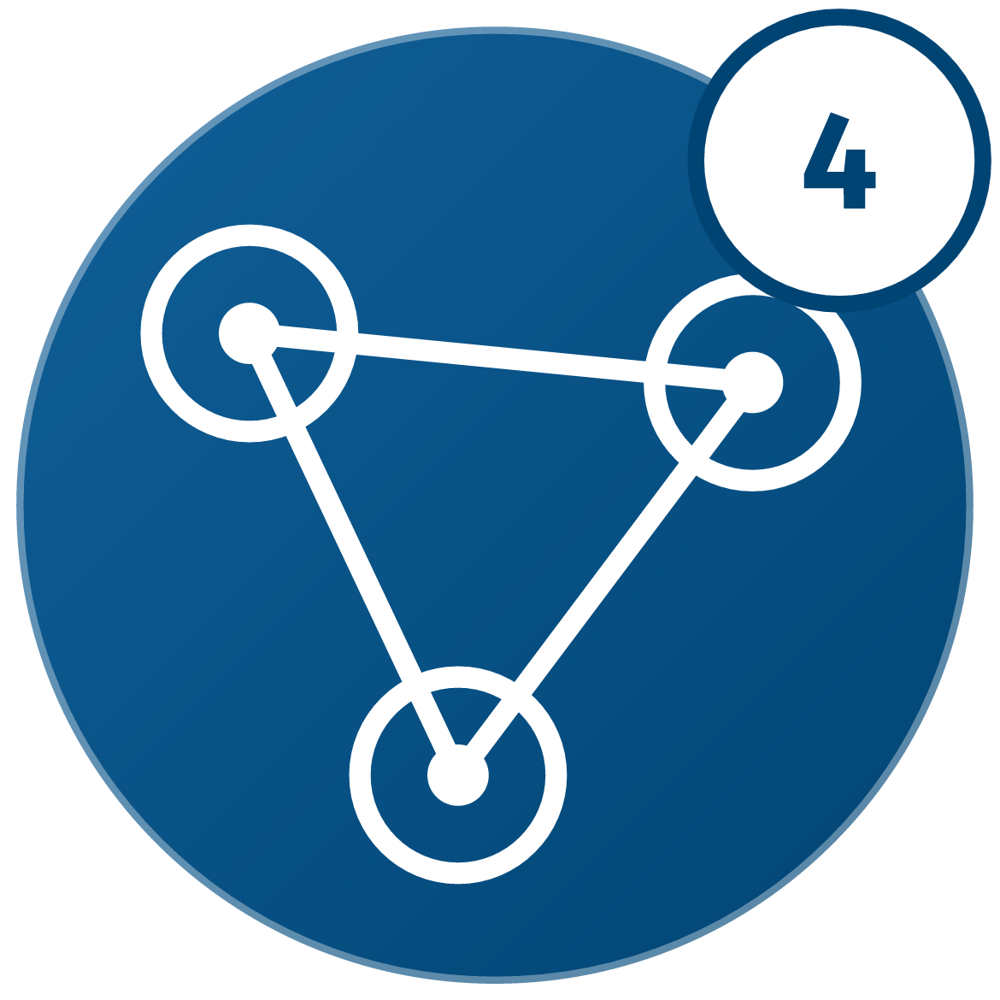

The four-step pattern and its purpose
Banners and badges for the four FDO steps and the four purposes.

PA.1The four-step FDOx pattern: FDO encapsulation, semantic metadata and paradata modelling, linking to community hubs, federated knowledge graph integration.
FDOx-squirrel, fdox-visuals (Florian Thiery, LEIZA). Code: MIT licence.



PA.2Badge for step 1: FDO encapsulation (persistent identifier, structured metadata and provenance).
FDOx-squirrel, fdox-visuals (Florian Thiery, LEIZA). Code: MIT licence.



PA.3Badge for step 2: semantic metadata and paradata modelling (acquisition, spatial anchoring, CIDOC CRM alignment).
FDOx-squirrel, fdox-visuals (Florian Thiery, LEIZA). Code: MIT licence.



PA.4Badge for step 3: linking to community hubs (Wikidata, OpenStreetMap).
FDOx-squirrel, fdox-visuals (Florian Thiery, LEIZA). Code: MIT licence.



PA.5Badge for step 4: federated knowledge graph integration across research infrastructures.
FDOx-squirrel, fdox-visuals (Florian Thiery, LEIZA). Code: MIT licence.



PA.6What FDOx does: four outcomes of the pattern, FAIR and citable, semantically queryable, interoperable, integrable.
FDOx-squirrel, fdox-visuals (Florian Thiery, LEIZA). Code: MIT licence.


PA.7Badge for outcome 1: FAIR and citable.
FDOx-squirrel, fdox-visuals (Florian Thiery, LEIZA). Code: MIT licence.



PA.8Badge for outcome 2: semantically queryable.
FDOx-squirrel, fdox-visuals (Florian Thiery, LEIZA). Code: MIT licence.



PA.9Badge for outcome 3: interoperable.
FDOx-squirrel, fdox-visuals (Florian Thiery, LEIZA). Code: MIT licence.



PA.10Badge for outcome 4: integrable.
FDOx-squirrel, fdox-visuals (Florian Thiery, LEIZA). Code: MIT licence.